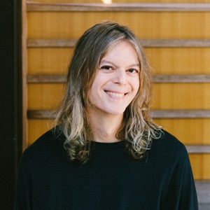

Workshop: Background Beliefs in the Construction of Meaning
Dates:
January 9-10, 2025
Venue:
University of Tübingen
Fürstenzimmer, Schloss Hohentübingen, Burgsteige 11, 72070 Tübingen, Germany 
Organizers:
University of Tübingen |
 Aoyama Gakuin University |
Hunter College, CUNY |
University of Tübingen |


Description:
Emmy Noether research group “Socially-relevant pragmatic inference” (University of Tübingen) is organizing a kick-off workshop “Background beliefs in the construction of meaning”.
The process of utterance interpretation depends not only on the linguistic properties of the utterance, but also on the background beliefs of the listener, her ideology, and perspective. In this workshop, we ask how these factors affect the construction of meaning.
We bring together formal semantics, philosophy of language, psycholinguistics, and computational modeling to ask what types of utterances depend on background beliefs and perspectives in their interpretation, how background beliefs can be integrated in the process of drawing pragmatic inferences, what types of beliefs matter for the interpretation of utterances, and how background beliefs relate to the linguistic notions of context and common ground.
Invited speakers:
|
|
|


|
|
|


Important dates:
Call Deadline: 10-Nov-2024
Notification of acceptance: December 10, 2024
Registration by: January, 3, 2025
Workshop: January 9-10, 2025
Registration:
Free of charge. Please send an email to asya.achimova@uni-tuebingen.de by January 3, 2025 if you are planning to attend the workshop.
Program:
TBA
Location:
Fürstenzimmer, Schloss Hohentübingen, Burgsteige 11, 72070 Tübingen, Germany